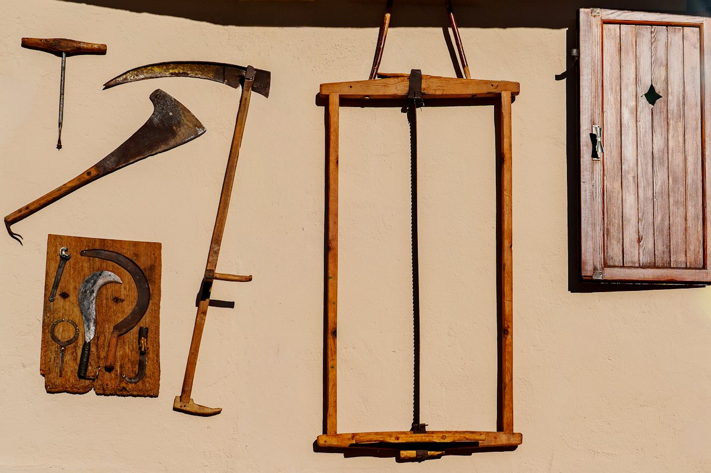
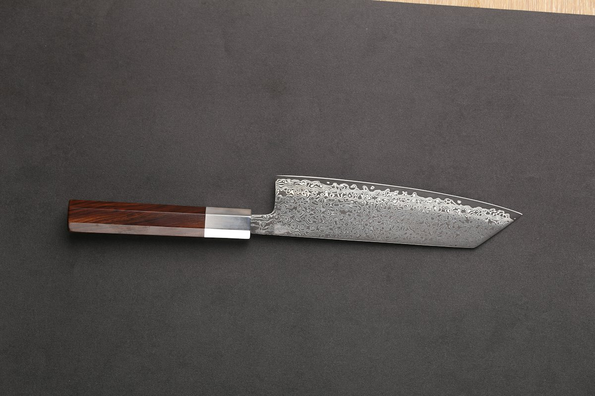
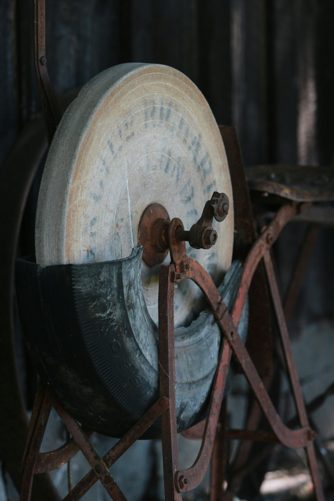

鎌
最古の伝統と、特殊な熱処理が生んだ切れ味。
鎌・園芸刃物・家庭刃物 兵庫県三木市
鎌、園芸刃物、家庭刃物、砥石まで。特殊な熱処理が生んだ切れ味を、兵庫県三木市からお届けしています。
鎌・園芸刃物・家庭刃物 兵庫県三木市
鎌、園芸刃物、家庭刃物、砥石まで。特殊な熱処理が生んだ切れ味を、兵庫県三木市からお届けしています。
鎌
最古の伝統。
特殊な熱処理が生んだ切れ味。薄鎌、中厚鎌、木鎌、鋸鎌、収穫鎌まで。
刃の上で、指やマウスを左右に動かしてください。
3Dのイメージです
薄鎌、中厚鎌、木鎌、鋸鎌、収穫鎌、草取り用、刈払い・造林用、特殊鎌、左利き用まで。全国の鎌の分布図もご用意しています。
剪定鋏や植木鋏などの園芸刃物、料理包丁などの家庭刃物、砥石やダイヤ砥石も取りそろえ、研ぎ方やお手入れ方法もご案内しています。

最古の伝統と、特殊な熱処理が生んだ切れ味。

冴えの切れ味。料理包丁や、そば打ちの道具も。

砥石とダイヤ砥石。研ぎ方もご案内しています。
…
| 営業時間 | 平日 9:00〜18:00 |
|---|---|
| 定休日 | 土曜・日曜・祝日 |
製品の品番やお取り扱い店については、お電話かメールでお問い合わせください。